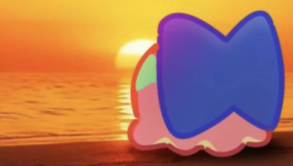
作为一名普通测试人员，我是如何被小章鱼一步步消磨信任，直到完全失去信任的
在进入 milthm #5 群beta测试组之前，我这辈子都没想到自己能气到现在这个样子，能他妈跑出来写一封瓜条。小章鱼你做到了，你做到了。
在这里我想说的是，作为一个 beta 测试组中的普通人，我是如何一步一步从对他完全的信任，到彻底的失望的，我希望这能成为大家的谈资，作为这位先生的赛博耻辱柱，留下来。
注意以下放出的聊天记录是有部分删除无关内容的，如果需要完整聊天记录可以私信我，我可以给出完整聊天记录，不过我相信完整聊天记录给出的信息并不会比我给出的图片更多。所有聊天记录截取自 milthm#5群，即beta测试组，该群现已停用，不知道可不可以继续查证。
叠甲：我深爱milthm，如果本瓜条有不实或令人不适的内容，或是任何其他情况，随时可以联系我删除。
小章鱼，互联网小章鱼，夜季…无数个名字汇聚成一个结合体，你当上 milthm 策划，是这个游戏一辈子最大的坎。
我昨晚梦见这个家伙了，我印象中他大概披着长发吧。梦里我只是走过了去打舞萌，现在我真后悔没有走上前去骂他一下——但是曾经，我作为一个深爱着 milthm 的玩家，爱屋及乌，我对于这个人抱有着极大的信任，甚至可以说，崇拜。
我认可他说的所有话，包括所谓的“第二章 7 首onoken 那种”鬼话（至于原评论我懒得找了，想必章鱼本人自己非常清楚自己说过这样的话）。这个时候我对于 milthm 的未来看得很好，即使当时出现了反对小章鱼的声音（我忘记了是什么原因），我也依旧没有参与到那种声音之中，心中甚至是偏向这位“伟大”的游戏策划的。
后来我在 8 群聊天的时候，被第二章的 beta 测试组收录，进入了5 群，这个时候，5 群成员 xyh5033 在发现小章鱼对于第二章曲师的错误信息和信口雌黄之后，跟小章鱼发生了争执，我当时作为一个普通成员，站在我的角度对小章鱼进行了辩护，详见下图。
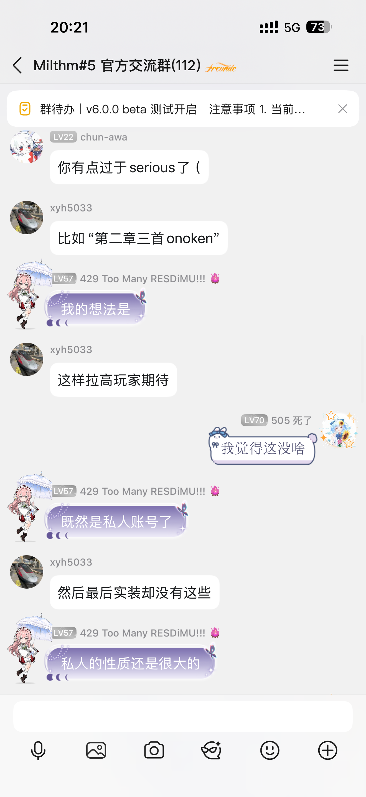
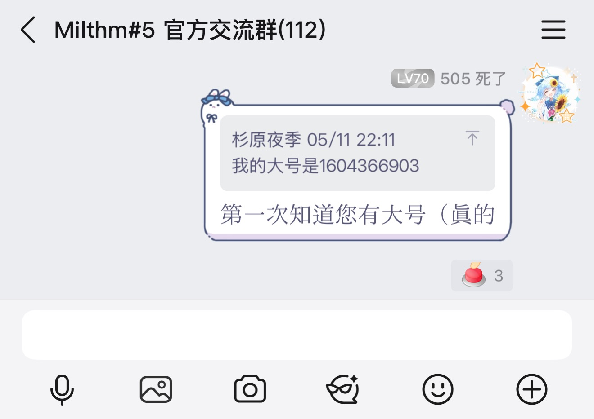
这个时候我发现小章鱼的态度十分不正确，但是依旧站在中立的角度进行劝说。
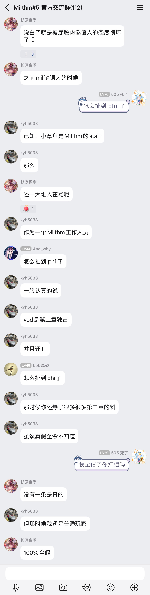
然后他退群了。
轻轻的他走了，正如他轻轻的来，他轻轻的招手，作别西天的云彩。
我靠我哪见过主策划动不动退群的哇，我当时就怕了，赶紧道歉啊，虽然不知道为什么要道歉。
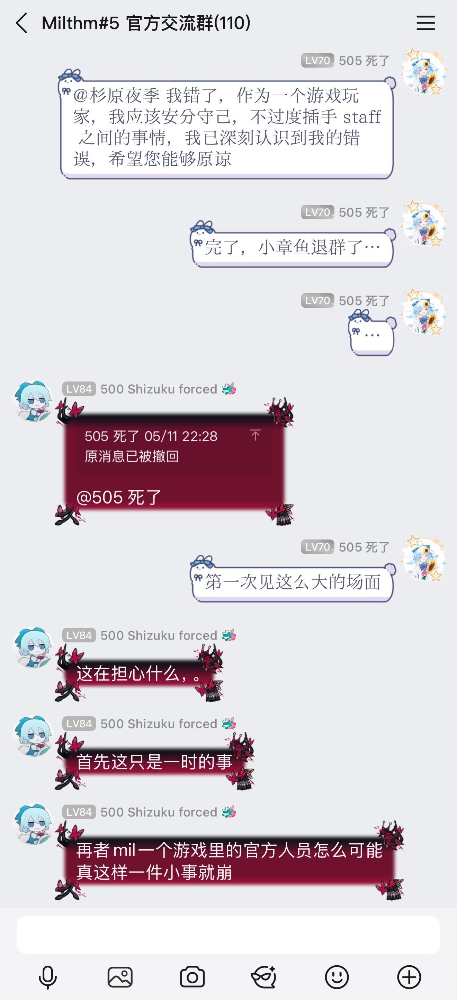
注意这里的消息已撤回是我说的“milthm 会不会因此崩掉啊…”
这是第一次对章鱼的信任崩塌。
然后神游那个事情都知道了吧，我们一群测试组测了半天，我们拿着自己的时间在测，“您”在干什么呢？
指尖轻挑，这是通知。
ok，白费啦。
哦注意这里有一个搞笑的事情。当时我在事情没有搞明白之前，因为相信了章鱼的一面之词，说出了这样一句话，这句话至今我都后悔——我怎么如此盲目，如此不负责任的就决定要去找别人对骂？
图如下：
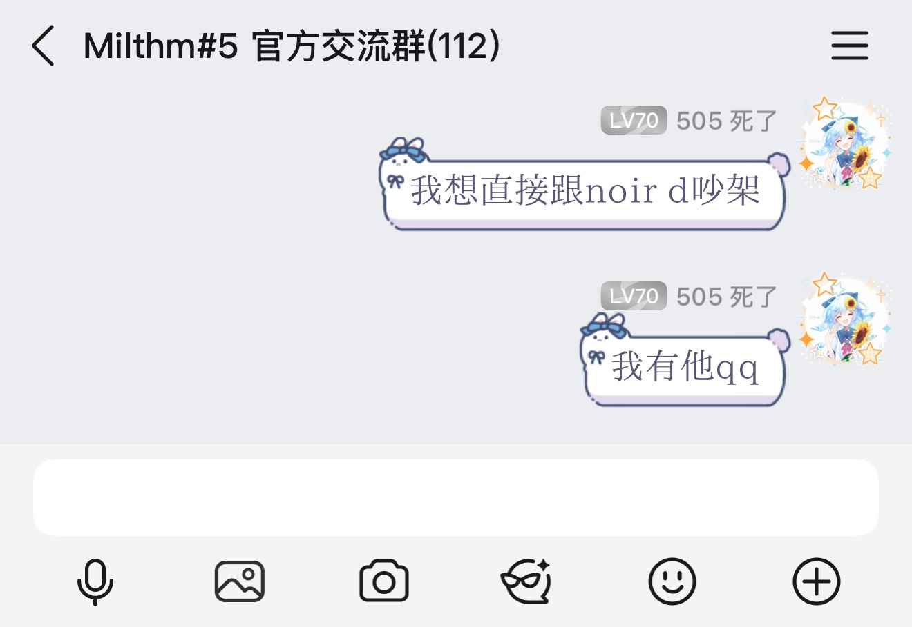
事后我去找了 noir-d 老师，他十分温和地回复了我并表示原谅。为了保护他的隐私，我这里不放聊天记录。
这是第二次，也是彻底的失望。
大家时间不多我说快点。第三次，是我认为最神奇的一次。在出事之后小章鱼退组，我认为他已经不会有什么影响了的时候——
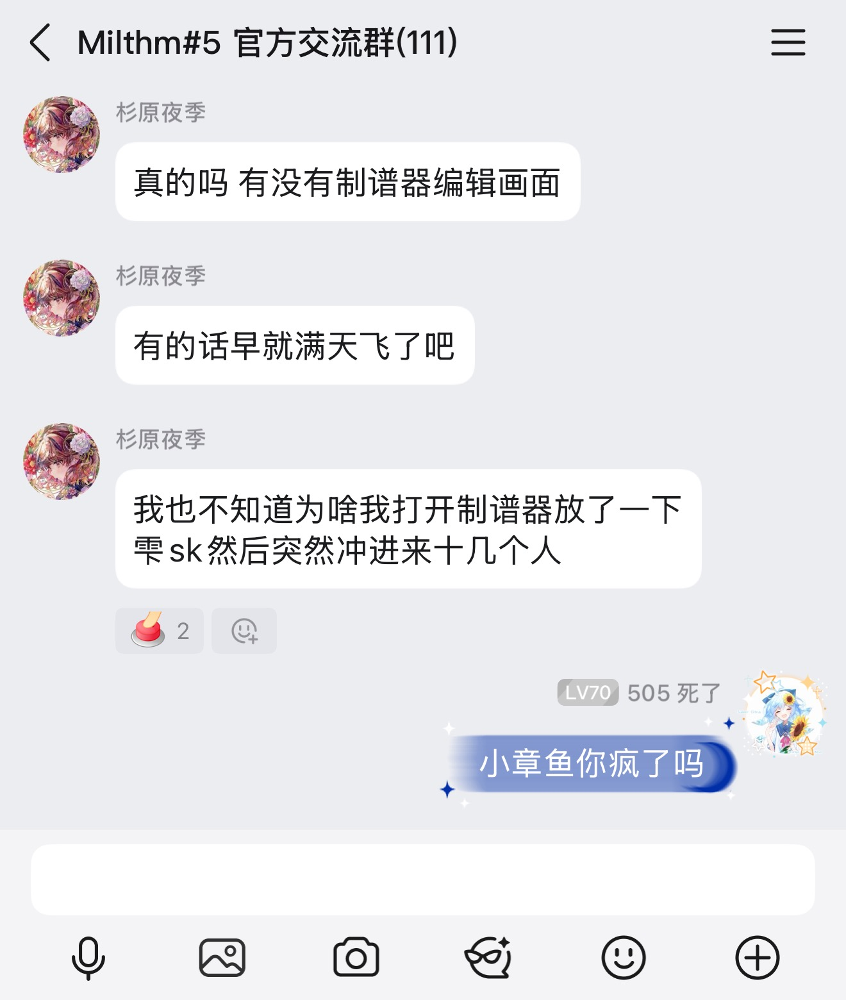
寻寻觅觅冷冷清清，脑袋里就一句话：“我跟你爆了。”
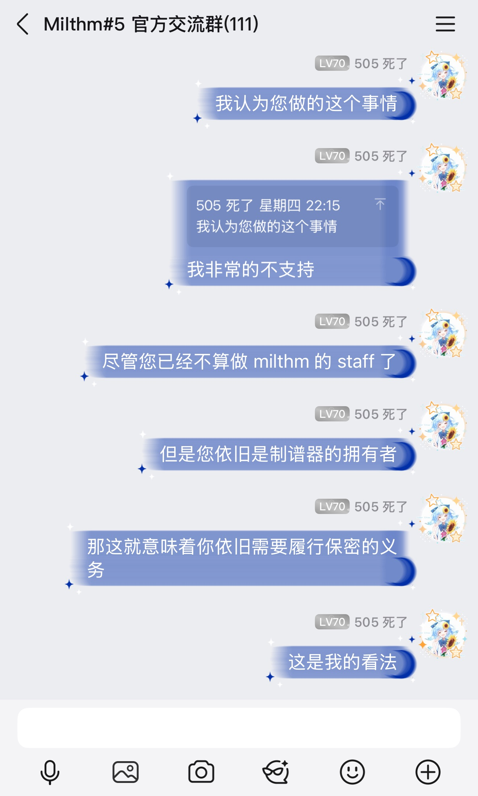
小章鱼怎么说呢？让我们欣赏二十一世纪最伟大的现代诗句：
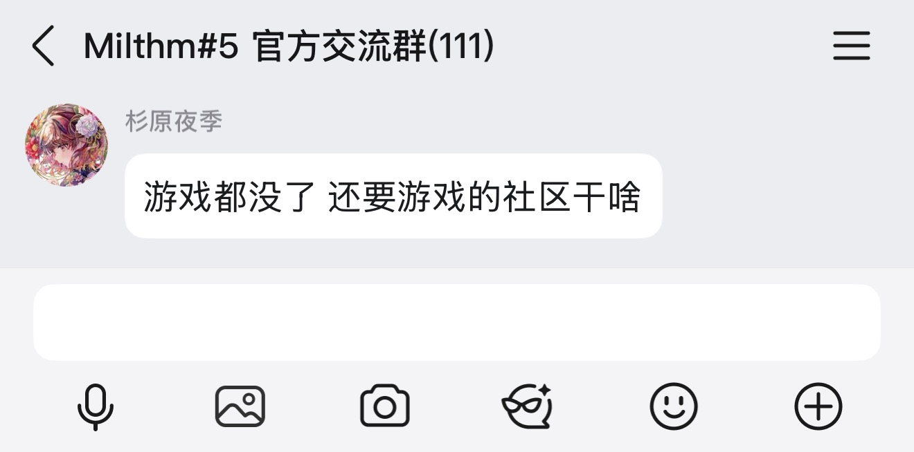
呃呃，四两拨千斤。我无言了。罢了。
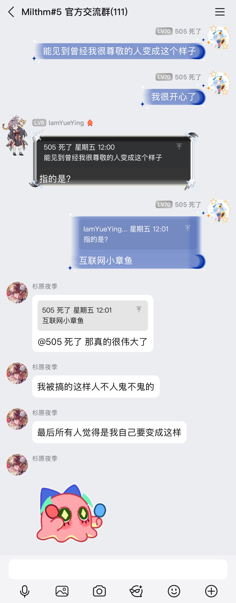
谢谢你，小章鱼，让我意识到人还能这样活。
然后还有 我们的 bonus 环节～你想看到更多的爆瓜吗？
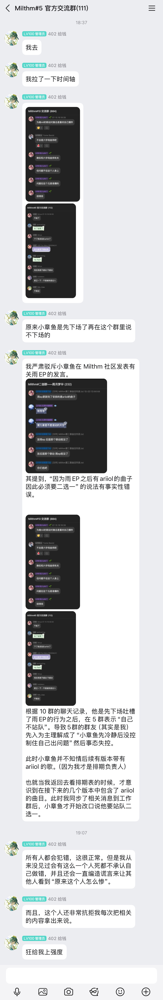
就这样，我们的小章鱼成为了一个可爱的章鱼小丸子。